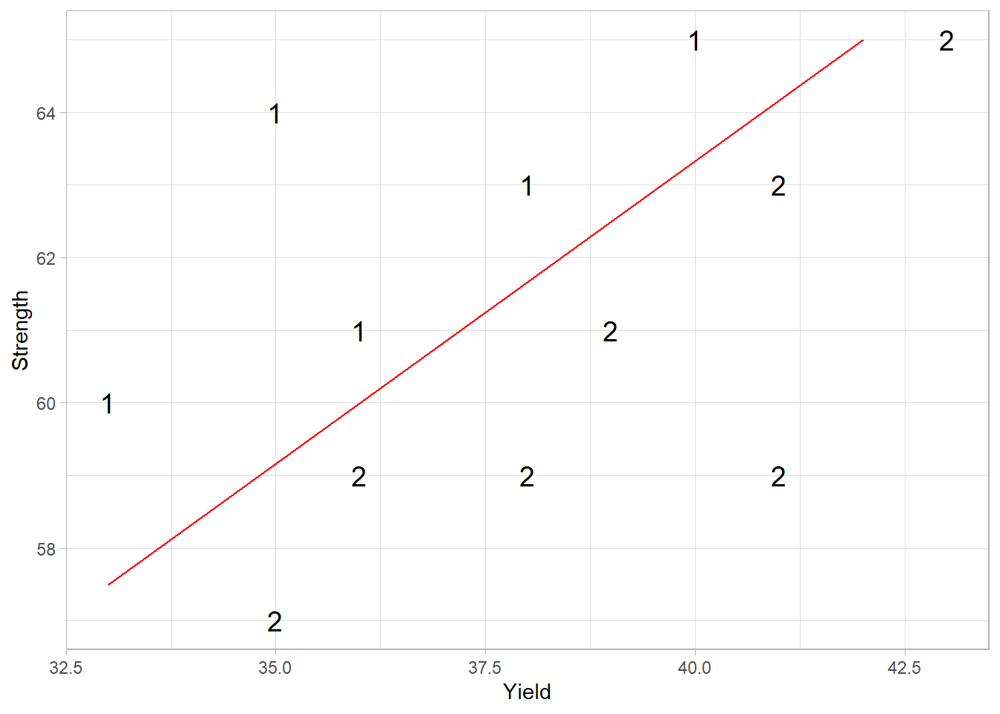

25.1 Basic Understanding
25.1.1 Multivariate Random Vectors
Let \(y_1, \dots, y_p\) be random variables, possibly correlated, with means \(\mu_1, \dots, \mu_p\). We define the random vector:
\[ \mathbf{y} = \begin{bmatrix} y_1 \\ \vdots \\ y_p \end{bmatrix} \]
The expected value (mean vector) is:
\[ E(\mathbf{y}) = \begin{bmatrix} \mu_1 \\ \vdots \\ \mu_p \end{bmatrix} \]
25.1.2 Covariance Matrix
The covariance between any two variables \(y_i\) and \(y_j\) is:
\[ \sigma_{ij} = \text{cov}(y_i, y_j) = E[(y_i - \mu_i)(y_j - \mu_j)] \]
This leads to the variance-covariance matrix, also called the dispersion matrix:
\[ \mathbf{\Sigma} = (\sigma_{ij}) = \begin{bmatrix} \sigma_{11} & \sigma_{12} & \dots & \sigma_{1p} \\ \sigma_{21} & \sigma_{22} & \dots & \sigma_{2p} \\ \vdots & \vdots & \ddots & \vdots \\ \sigma_{p1} & \sigma_{p2} & \dots & \sigma_{pp} \end{bmatrix} \]
where \(\sigma_{ii} = \text{Var}(y_i)\) represents the variance of \(y_i\). Since covariance is symmetric, we have:
\[ \sigma_{ij} = \sigma_{ji}, \quad \forall i, j. \]
If we consider two random vectors \(\mathbf{u}_{p \times 1}\) and \(\mathbf{v}_{q \times 1}\) with means \(\mu_u\) and \(\mu_v\), their cross-covariance matrix is:
\[ \mathbf{\Sigma}_{uv} = \text{cov}(\mathbf{u}, \mathbf{v}) = E[(\mathbf{u} - \mu_u)(\mathbf{v} - \mu_v)'] \]
where \(\mathbf{\Sigma}_{uv} \neq \mathbf{\Sigma}_{vu}\), but they satisfy:
\[ \mathbf{\Sigma}_{uv} = \mathbf{\Sigma}_{vu}'. \]
25.1.2.1 Properties of Covariance Matrices
A valid covariance matrix \(\mathbf{\Sigma}\) satisfies the following properties:
Symmetry:
\[\mathbf{\Sigma}' = \mathbf{\Sigma}.\]Non-negative definiteness:
\[\mathbf{a}'\mathbf{\Sigma} \mathbf{a} \geq 0, \quad \forall \mathbf{a} \in \mathbb{R}^p,\] which implies that the eigenvalues \(\lambda_1, \dots, \lambda_p\) satisfy: \[\lambda_1 \geq \lambda_2 \geq \dots \geq \lambda_p \geq 0.\]Generalized variance (determinant of \(\mathbf{\Sigma}\)):
\[|\mathbf{\Sigma}| = \lambda_1 \lambda_2 \dots \lambda_p \geq 0.\]Total variance (trace of \(\mathbf{\Sigma}\)):
\[\text{tr}(\mathbf{\Sigma}) = \sum_{i=1}^{p} \lambda_i = \sum_{i=1}^{p} \sigma_{ii}.\]Positive definiteness (a common assumption in multivariate analysis):
- All eigenvalues of \(\mathbf{\Sigma}\) are strictly positive.
- \(\mathbf{\Sigma}\) has an inverse \(\mathbf{\Sigma}^{-1}\), satisfying: \[\mathbf{\Sigma}^{-1} \mathbf{\Sigma} = \mathbf{I}_{p \times p} = \mathbf{\Sigma} \mathbf{\Sigma}^{-1}.\]
25.1.2.2 Correlation Matrices
The correlation matrix provides a standardized measure of linear relationships between variables. The correlation between two variables \(y_i\) and \(y_j\) is defined as:
\[ \rho_{ij} = \frac{\sigma_{ij}}{\sqrt{\sigma_{ii} \sigma_{jj}}} \]
where \(\sigma_{ij}\) is the covariance and \(\sigma_{ii}\) and \(\sigma_{jj}\) are variances.
Thus, the correlation matrix \(\mathbf{R}\) is:
\[ \mathbf{R} = \begin{bmatrix} \rho_{11} & \rho_{12} & \dots & \rho_{1p} \\ \rho_{21} & \rho_{22} & \dots & \rho_{2p} \\ \vdots & \vdots & \ddots & \vdots \\ \rho_{p1} & \rho_{p2} & \dots & \rho_{pp} \end{bmatrix} \]
where \(\rho_{ii} = 1\) for all \(i\).
Alternatively, the correlation matrix can be expressed as:
\[ \mathbf{R} = [\text{diag}(\mathbf{\Sigma})]^{-1/2} \mathbf{\Sigma} [\text{diag}(\mathbf{\Sigma})]^{-1/2} \]
where:
- \(\text{diag}(\mathbf{\Sigma})\) is a diagonal matrix with elements \(\sigma_{ii}\) on the diagonal and zeros elsewhere.
- \(\mathbf{A}^{1/2}\) (the square root of a symmetric matrix) is a symmetric matrix satisfying \(\mathbf{A} = \mathbf{A}^{1/2} \mathbf{A}^{1/2}\).
25.1.3 Equalities in Expectation and Variance
Let:
- \(\mathbf{x}\) and \(\mathbf{y}\) be random vectors with means \(\mu_x\) and \(\mu_y\) and covariance matrices \(\mathbf{\Sigma}_x\) and \(\mathbf{\Sigma}_y\).
- \(\mathbf{A}\) and \(\mathbf{B}\) be matrices of constants, and \(\mathbf{c}\) and \(\mathbf{d}\) be vectors of constants.
Then the following properties hold:
Expectation transformations: \[ E(\mathbf{Ay + c}) = \mathbf{A} \mu_y + \mathbf{c} \]
Variance transformations: \[ \text{Var}(\mathbf{Ay + c}) = \mathbf{A} \text{Var}(\mathbf{y}) \mathbf{A}' = \mathbf{A \Sigma_y A'} \]
Covariance of linear transformations: \[ \text{Cov}(\mathbf{Ay + c}, \mathbf{By + d}) = \mathbf{A \Sigma_y B'} \]
Expectation of combined variables: \[ E(\mathbf{Ay + Bx + c}) = \mathbf{A} \mu_y + \mathbf{B} \mu_x + \mathbf{c} \]
Variance of combined variables: \[ \text{Var}(\mathbf{Ay + Bx + c}) = \mathbf{A \Sigma_y A' + B \Sigma_x B' + A \Sigma_{yx} B' + B\Sigma'_{yx}A'} \]
25.1.4 Multivariate Normal Distribution
The multivariate normal distribution (MVN) is fundamental in multivariate analysis. Let \(\mathbf{y}\) be a multivariate normal random variable with mean \(\mu\) and covariance matrix \(\mathbf{\Sigma}\). Then its probability density function (PDF) is:
\[ f(\mathbf{y}) = \frac{1}{(2\pi)^{p/2} |\mathbf{\Sigma}|^{1/2}} \exp \left(-\frac{1}{2} (\mathbf{y} - \mu)' \mathbf{\Sigma}^{-1} (\mathbf{y} - \mu) \right). \]
We denote this distribution as:
\[ \mathbf{y} \sim N_p(\mu, \mathbf{\Sigma}). \]
25.1.4.1 Properties of the Multivariate Normal Distribution
The multivariate normal distribution has several important properties that are fundamental to multivariate statistical methods.
Linear Transformations:
Let \(\mathbf{A}_{r \times p}\) be a fixed matrix. Then:\[ \mathbf{Ay} \sim N_r (\mathbf{A \mu}, \mathbf{A \Sigma A'}) \]
where \(r \leq p\). Additionally, for \(\mathbf{A \Sigma A'}\) to be non-singular, the rows of \(\mathbf{A}\) must be linearly independent.
Standardization using Precision Matrix:
Let \(\mathbf{G}\) be a matrix such that:\[ \mathbf{\Sigma}^{-1} = \mathbf{GG}' \]
Then:
\[ \mathbf{G'y} \sim N_p(\mathbf{G' \mu}, \mathbf{I}) \]
and:
\[ \mathbf{G'(y-\mu)} \sim N_p (0,\mathbf{I}). \]
This transformation whitens the data, converting it into an identity covariance structure.
Linear Combinations:
Any fixed linear combination of \(y_1, \dots, y_p\), say \(\mathbf{c'y}\), follows:\[ \mathbf{c'y} \sim N_1 (\mathbf{c' \mu}, \mathbf{c' \Sigma c}). \]
25.1.4.2 Partitioning the MVN Distribution
Consider a partitioned random vector:
\[ \mathbf{y} = \begin{bmatrix} \mathbf{y}_1 \\ \mathbf{y}_2 \end{bmatrix} \sim N_p \left( \begin{bmatrix} \mu_1 \\ \mu_2 \end{bmatrix}, \begin{bmatrix} \mathbf{\Sigma}_{11} & \mathbf{\Sigma}_{12} \\ \mathbf{\Sigma}_{21} & \mathbf{\Sigma}_{22} \end{bmatrix} \right). \]
where:
- \(\mathbf{y}_1\) is \(p_1 \times 1\),
- \(\mathbf{y}_2\) is \(p_2 \times 1\),
- \(p_1 + p_2 = p\),
- and \(p_1, p_2 \geq 1\).
The marginal distributions of \(\mathbf{y}_1\) and \(\mathbf{y}_2\) are:
\[ \mathbf{y}_1 \sim N_{p_1}(\mathbf{\mu_1}, \mathbf{\Sigma_{11}}) \quad \text{and} \quad \mathbf{y}_2 \sim N_{p_2}(\mathbf{\mu_2}, \mathbf{\Sigma_{22}}). \]
Each component \(y_i\) follows:
\[ y_i \sim N_1(\mu_i, \sigma_{ii}). \]
The conditional distribution of \(\mathbf{y}_1\) given \(\mathbf{y}_2\) is also normal:
\[ \mathbf{y}_1 | \mathbf{y}_2 \sim N_{p_1} \Big( \mathbf{\mu_1 + \Sigma_{12} \Sigma_{22}^{-1}(y_2 - \mu_2)}, \mathbf{\Sigma_{11} - \Sigma_{12} \Sigma_{22}^{-1} \Sigma_{21}} \Big). \]
This equation shows that knowing \(\mathbf{y}_2\) adjusts the mean of \(\mathbf{y}_1\), and the variance is reduced.
Similarly, the conditional distribution of \(\mathbf{y}_2\) given \(\mathbf{y}_1\) follows the same structure.
\(\mathbf{y}_1\) and \(\mathbf{y}_2\) are independent if and only if:
\[ \mathbf{\Sigma}_{12} = 0. \]
If \(\mathbf{y} \sim N(\mathbf{\mu}, \mathbf{\Sigma})\) and \(\mathbf{\Sigma}\) is positive definite, then:
\[ (\mathbf{y} - \mu)' \mathbf{\Sigma}^{-1} (\mathbf{y} - \mu) \sim \chi^2_p. \]
This property is essential in hypothesis testing and Mahalanobis distance calculations.
25.1.4.3 Summation of Independent MVN Variables
If \(\mathbf{y}_i\) are independent random vectors following:
\[ \mathbf{y}_i \sim N_p (\mathbf{\mu}_i , \mathbf{\Sigma}_i), \]
then for fixed matrices \(\mathbf{A}_{i(m \times p)}\), the sum:
\[ \sum_{i=1}^k \mathbf{A}_i \mathbf{y}_i \]
follows:
\[ \sum_{i=1}^k \mathbf{A}_i \mathbf{y}_i \sim N_m \Big( \sum_{i=1}^{k} \mathbf{A}_i \mathbf{\mu}_i, \sum_{i=1}^k \mathbf{A}_i \mathbf{\Sigma}_i \mathbf{A}_i' \Big). \]
This property underpins multivariate regression and linear discriminant analysis.
25.1.4.4 Multiple Regression
In multivariate analysis, multiple regression extends simple regression to cases where multiple predictor variables influence a response variable. Suppose:
\[ \left( \begin{array} {c} Y \\ \mathbf{x} \end{array} \right) \sim N_{p+1} \left( \left[ \begin{array} {c} \mu_y \\ \mathbf{\mu}_x \end{array} \right] , \left[ \begin{array} {cc} \sigma^2_Y & \mathbf{\Sigma}_{yx} \\ \mathbf{\Sigma}_{yx} & \mathbf{\Sigma}_{xx} \end{array} \right] \right) \]
where:
- \(Y\) is a scalar response variable.
- \(\mathbf{x}\) is a \(p \times 1\) vector of predictors.
- \(\mu_y\) and \(\mathbf{\mu}_x\) are the respective means.
- \(\sigma_Y^2\) is the variance of \(Y\).
- \(\mathbf{\Sigma}_{xx}\) is the covariance matrix of \(\mathbf{x}\).
- \(\mathbf{\Sigma}_{yx}\) is the covariance vector between \(Y\) and \(\mathbf{x}\).
From the properties of the multivariate normal distribution, the conditional expectation of \(Y\) given \(\mathbf{x}\) is:
\[ \begin{aligned} E(Y| \mathbf{x}) &= \mu_y + \mathbf{\Sigma}_{yx} \mathbf{\Sigma}_{xx}^{-1} (\mathbf{x}- \mathbf{\mu}_x) \\ &= \mu_y - \mathbf{\Sigma}_{yx} \mathbf{\Sigma}_{xx}^{-1} \mathbf{\mu}_x + \mathbf{\Sigma}_{yx} \mathbf{\Sigma}_{xx}^{-1} \mathbf{x} \\ &= \beta_0 + \mathbf{\beta' x}, \end{aligned} \]
where:
- \(\beta_0 = \mu_y - \mathbf{\Sigma}_{yx} \mathbf{\Sigma}_{xx}^{-1} \mathbf{\mu}_x\) (intercept).
- \(\mathbf{\beta} = (\beta_1, \dots, \beta_p)' = \mathbf{\Sigma}_{xx}^{-1} \mathbf{\Sigma}_{yx}'\) (regression coefficients).
This resembles the least squares estimator:
\[ \mathbf{\beta} = (\mathbf{x'x})^{-1} \mathbf{x'y}, \]
but differs when considering the theoretical covariance relationships rather than empirical estimates.
The conditional variance of \(Y\) given \(\mathbf{x}\) is:
\[ \text{Var}(Y | \mathbf{x}) = \sigma^2_Y - \mathbf{\Sigma}_{yx} \mathbf{\Sigma}_{xx}^{-1} \mathbf{\Sigma'}_{yx}. \]
This shows that knowing \(\mathbf{x}\) reduces uncertainty in predicting \(Y\).
25.1.4.5 Samples from Multivariate Normal Populations
Suppose we have a random sample of size \(n\), denoted as:
\[ \mathbf{y}_1, \dots, \mathbf{y}_n \sim N_p (\mathbf{\mu}, \mathbf{\Sigma}). \]
Then:
Sample Mean: The sample mean is given by:
\[ \bar{\mathbf{y}} = \frac{1}{n} \sum_{i=1}^n \mathbf{y}_i. \]
Since \(\mathbf{y}_i\) are independent and identically distributed (iid), it follows that:
\[ \bar{\mathbf{y}} \sim N_p (\mathbf{\mu}, \mathbf{\Sigma} / n). \]
This implies that \(\bar{\mathbf{y}}\) is an unbiased estimator of \(\mathbf{\mu}\).
Sample Covariance Matrix: The \(p \times p\) sample variance-covariance matrix is:
\[ \mathbf{S} = \frac{1}{n-1} \sum_{i=1}^n (\mathbf{y}_i - \bar{\mathbf{y}})(\mathbf{y}_i - \bar{\mathbf{y}})'. \]
Expanding this:
\[ \mathbf{S} = \frac{1}{n-1} \left( \sum_{i=1}^n \mathbf{y}_i \mathbf{y}_i' - n \bar{\mathbf{y}} \bar{\mathbf{y}}' \right). \]
- \(\mathbf{S}\) is symmetric.
- \(\mathbf{S}\) is an unbiased estimator of \(\mathbf{\Sigma}\).
- \(\mathbf{S}\) contains \(p(p+1)/2\) unique random variables.
Wishart Distribution: The scaled sample covariance matrix follows a Wishart distribution:
\[ (n-1) \mathbf{S} \sim W_p(n-1, \mathbf{\Sigma}). \]
where:
- \(W_p(n-1, \mathbf{\Sigma})\) is a Wishart distribution with \(n-1\) degrees of freedom.
- \(E[(n-1) \mathbf{S}] = (n-1) \mathbf{\Sigma}\).
The Wishart distribution is a multivariate generalization of the chi-square distribution.
Independence of \(\bar{\mathbf{y}}\) and \(\mathbf{S}\): The sample mean \(\bar{\mathbf{y}}\) and sample covariance matrix \(\mathbf{S}\) are independent:
\[ \bar{\mathbf{y}} \perp \mathbf{S}. \]
This result is crucial for inference in multivariate hypothesis testing.
Sufficiency of \(\bar{\mathbf{y}}\) and \(\mathbf{S}\): The pair \((\bar{\mathbf{y}}, \mathbf{S})\) are sufficient statistics for \((\mathbf{\mu}, \mathbf{\Sigma})\).
That is, all the information about \(\mathbf{\mu}\) and \(\mathbf{\Sigma}\) in the sample is contained in \(\bar{\mathbf{y}}\) and \(\mathbf{S}\), regardless of sample size.
25.1.4.6 Large Sample Properties
Consider a random sample \(\mathbf{y}_1, \dots, \mathbf{y}_n\) drawn from a population with mean \(\mathbf{\mu}\) and variance-covariance matrix \(\mathbf{\Sigma}\).
Key Properties
Consistency of Estimators:
- The sample mean \(\bar{\mathbf{y}}\) is a consistent estimator of \(\mathbf{\mu}\).
- The sample covariance matrix \(\mathbf{S}\) is a consistent estimator of \(\mathbf{\Sigma}\).
Multivariate Central Limit Theorem:
Similar to the univariate case, the sample mean follows approximately:
\[ \sqrt{n}(\bar{\mathbf{y}} - \mu) \dot{\sim} N_p (\mathbf{0}, \mathbf{\Sigma}) \]
This approximation holds when the sample size is large relative to the number of variables (\(n \geq 25p\)).
Equivalently, the sample mean follows:
\[ \bar{\mathbf{y}} \dot{\sim} N_p (\mathbf{\mu}, \mathbf{\Sigma} / n). \]
Wald’s Theorem:
When \(n\) is large relative to \(p\):
\[ n(\bar{\mathbf{y}} - \mathbf{\mu})' \mathbf{S}^{-1} (\bar{\mathbf{y}} - \mathbf{\mu}) \sim \chi^2_p. \]
This is useful for hypothesis testing about \(\mathbf{\mu}\).
25.1.4.7 Maximum Likelihood Estimation for MVN
Suppose \(\mathbf{y}_1, \dots, \mathbf{y}_n\) are iid random vectors from:
\[ \mathbf{y}_i \sim N_p (\mathbf{\mu}, \mathbf{\Sigma}). \]
The likelihood function for the sample is:
\[ \begin{aligned} L(\mathbf{\mu}, \mathbf{\Sigma}) &= \prod_{j=1}^n \left[ \frac{1}{(2\pi)^{p/2}|\mathbf{\Sigma}|^{1/2}} \exp \left(-\frac{1}{2} (\mathbf{y}_j - \mathbf{\mu})' \mathbf{\Sigma}^{-1} (\mathbf{y}_j - \mathbf{\mu}) \right) \right] \\ &= \frac{1}{(2\pi)^{np/2}|\mathbf{\Sigma}|^{n/2}} \exp \left(-\frac{1}{2} \sum_{j=1}^n (\mathbf{y}_j - \mathbf{\mu})' \mathbf{\Sigma}^{-1} (\mathbf{y}_j - \mathbf{\mu}) \right). \end{aligned} \]
Taking the log-likelihood function and differentiating with respect to \(\mathbf{\mu}\) and \(\mathbf{\Sigma}\) leads to the maximum likelihood estimators:
The MLE for the mean is simply the sample mean:
\[ \hat{\mathbf{\mu}} = \bar{\mathbf{y}}. \]
The MLE for the covariance matrix is:
\[ \hat{\mathbf{\Sigma}} = \frac{n-1}{n} \mathbf{S}. \]
where:
\[ \mathbf{S} = \frac{1}{n-1} \sum_{j=1}^n (\mathbf{y}_j - \bar{\mathbf{y}})(\mathbf{y}_j - \bar{\mathbf{y}})'. \]
This differs from \(\mathbf{S}\) by the factor \(\frac{n-1}{n}\), making \(\hat{\mathbf{\Sigma}}\) a biased estimator of \(\mathbf{\Sigma}\).
25.1.4.7.1 Properties of Maximum Likelihood Estimators
MLEs have several important theoretical properties:
- Invariance:
If \(\hat{\theta}\) is the MLE of \(\theta\), then the MLE of any function \(h(\theta)\) is:
\[ h(\hat{\theta}). \]
- Consistency:
- MLEs are consistent estimators, meaning they converge to the true parameter values as \(n \to \infty\).
- However, they can be biased for finite samples.
- Efficiency:
- MLEs are asymptotically efficient, meaning they achieve the Cramér-Rao lower bound for variance in large samples.
- No other estimator has a smaller variance asymptotically.
- Asymptotic Normality:
Suppose \(\hat{\theta}_n\) is the MLE for \(\theta\) based on \(n\) independent observations.
Then, for large \(n\):
\[ \hat{\theta}_n \dot{\sim} N(\theta, \mathbf{H}^{-1}), \]
where \(\mathbf{H}\) is the Fisher Information Matrix, defined as:
\[ \mathbf{H}_{ij} = -E\left(\frac{\partial^2 l(\mathbf{\theta})}{\partial \theta_i \partial \theta_j}\right). \]
- The Fisher Information Matrix measures the amount of information in the data about \(\theta\).
- It can be estimated by evaluating the second derivatives of the log-likelihood function at \(\hat{\theta}_n\).
25.1.4.7.2 Likelihood Ratio Testing
MLEs allow us to construct likelihood ratio tests for hypothesis testing.
Suppose we test a null hypothesis \(H_0\):
\[ H_0: \mathbf{\theta} \in \Theta_0 \quad \text{vs.} \quad H_A: \mathbf{\theta} \in \Theta. \]
The likelihood ratio statistic is:
\[ \Lambda = \frac{\max_{\theta \in \Theta_0} L(\mathbf{\mu}, \mathbf{\Sigma} | \mathbf{Y})} {\max_{\theta \in \Theta} L(\mathbf{\mu}, \mathbf{\Sigma} | \mathbf{Y})}. \]
Under large sample conditions, we use the Wilks’ theorem, which states:
\[ -2 \log \Lambda \sim \chi^2_v, \]
where:
- \(v\) is the difference in the number of parameters between the unrestricted and restricted models.
- This allows us to approximate the distribution of \(-2 \log \Lambda\) using the chi-square distribution.
25.1.5 Test of Multivariate Normality
Assessing multivariate normality is essential for many statistical techniques, including multivariate regression, principal component analysis, and MANOVA. Below are key methods for testing MVN.
25.1.5.1 Univariate Normality Checks
Before testing for multivariate normality, it is useful to check for univariate normality in each variable separately:
- Normality Assessment: Visual and statistical tests can be used to check normality.
- Key Property: If any univariate distribution is not normal, then the joint multivariate distribution cannot be normal.
- Important Caveat: Even if all univariate distributions are normal, this does not guarantee multivariate normality.
Thus, univariate normality is a necessary but not sufficient condition for MVN.
25.1.5.2 Mardia’s Test for Multivariate Normality
Mardia (1970) proposed two measures for assessing MVN:
1. Multivariate Skewness
Defined as:
\[ \beta_{1,p} = E[(\mathbf{y} - \mathbf{\mu})' \mathbf{\Sigma}^{-1} (\mathbf{x} - \mathbf{\mu})]^3, \]
where \(\mathbf{x}\) and \(\mathbf{y}\) are independent but identically distributed.
2. Multivariate Kurtosis
Defined as:
\[ \beta_{2,p} = E[(\mathbf{y} - \mathbf{\mu})' \mathbf{\Sigma}^{-1} (\mathbf{x} - \mathbf{\mu})]^2. \]
For a true multivariate normal distribution:
\[ \beta_{1,p} = 0, \quad \beta_{2,p} = p(p+2). \]
Sample Estimates
For a random sample of size \(n\), we estimate:
\[ \hat{\beta}_{1,p} = \frac{1}{n^2} \sum_{i=1}^{n} \sum_{j=1}^{n} g^2_{ij}, \]
\[ \hat{\beta}_{2,p} = \frac{1}{n} \sum_{i=1}^{n} g^2_{ii}, \]
where:
- \(g_{ij} = (\mathbf{y}_i - \bar{\mathbf{y}})' \mathbf{S}^{-1} (\mathbf{y}_j - \bar{\mathbf{y}})\),
- \(g_{ii} = d_i^2\), which is the Mahalanobis distance.
Mardia (1970) derived the following large-sample approximations:
\[ \kappa_1 = \frac{n \hat{\beta}_{1,p}}{6} \dot{\sim} \chi^2_{p(p+1)(p+2)/6}, \]
\[ \kappa_2 = \frac{\hat{\beta}_{2,p} - p(p+2)}{\sqrt{8p(p+2)/n}} \sim N(0,1). \]
Interpretation
- \(\kappa_1\) and \(\kappa_2\) are test statistics for the null hypothesis of MVN.
- Non-normality in means is associated with skewness (\(\beta_{1,p}\)).
- Non-normality in covariance is associated with kurtosis (\(\beta_{2,p}\)).
25.1.5.3 Doornik-Hansen Test
- This test transforms variables to approximate normality using skewness and kurtosis corrections (Doornik and Hansen 2008).
- Recommended when sample sizes are small.
25.1.5.4 Chi-Square Q-Q Plot
The Chi-Square Q-Q plot is a graphical method for assessing MVN:
Compute Mahalanobis distances:
\[ d_i^2 = (\mathbf{y}_i - \bar{\mathbf{y}})' \mathbf{S}^{-1} (\mathbf{y}_i - \bar{\mathbf{y}}). \]
The transformed variables:
\[ \mathbf{z}_i = \mathbf{\Sigma}^{-1/2}(\mathbf{y}_i - \mathbf{\mu}) \]
are iid from \(N_p(\mathbf{0}, \mathbf{I})\), and thus:
\[ d_i^2 \sim \chi^2_p. \]
Plot ordered \(d_i^2\) values against the theoretical quantiles of the \(\chi^2_p\) distribution.
Interpretation
- If the data are MVN, the plot should resemble a straight line at 45°.
- Deviations suggest non-normality, especially in the tails.
Limitations
- Requires a large sample size.
- Even when data are truly MVN, the tails may deviate.
25.1.5.5 Handling Non-Normality
If data fail the multivariate normality tests, possible approaches include:
- Ignoring non-normality (acceptable for large samples due to the Central Limit Theorem).
- Using nonparametric methods (e.g., permutation tests).
- Applying approximate models (e.g., Generalized Linear Mixed Models).
- Transforming the data (e.g., log, Box-Cox, or rank transformations 12).
# Load necessary libraries
library(heplots) # Multivariate hypothesis tests
library(ICSNP) # Multivariate tests
library(MVN) # Multivariate normality tests
library(tidyverse) # Data wrangling & visualization
# Load dataset
trees <- read.table("images/trees.dat")
names(trees) <-
c("Nitrogen", "Phosphorous", "Potassium", "Ash", "Height")
# Structure of dataset
str(trees)
#> 'data.frame': 26 obs. of 5 variables:
#> $ Nitrogen : num 2.2 2.1 1.52 2.88 2.18 1.87 1.52 2.37 2.06 1.84 ...
#> $ Phosphorous: num 0.417 0.354 0.208 0.335 0.314 0.271 0.164 0.302 0.373 0.265 ...
#> $ Potassium : num 1.35 0.9 0.71 0.9 1.26 1.15 0.83 0.89 0.79 0.72 ...
#> $ Ash : num 1.79 1.08 0.47 1.48 1.09 0.99 0.85 0.94 0.8 0.77 ...
#> $ Height : int 351 249 171 373 321 191 225 291 284 213 ...
# Summary statistics
summary(trees)
#> Nitrogen Phosphorous Potassium Ash
#> Min. :1.130 Min. :0.1570 Min. :0.3800 Min. :0.4500
#> 1st Qu.:1.532 1st Qu.:0.1963 1st Qu.:0.6050 1st Qu.:0.6375
#> Median :1.855 Median :0.2250 Median :0.7150 Median :0.9300
#> Mean :1.896 Mean :0.2506 Mean :0.7619 Mean :0.8873
#> 3rd Qu.:2.160 3rd Qu.:0.2975 3rd Qu.:0.8975 3rd Qu.:0.9825
#> Max. :2.880 Max. :0.4170 Max. :1.3500 Max. :1.7900
#> Height
#> Min. : 65.0
#> 1st Qu.:122.5
#> Median :181.0
#> Mean :196.6
#> 3rd Qu.:276.0
#> Max. :373.0
# Pearson correlation matrix
cor(trees, method = "pearson")
#> Nitrogen Phosphorous Potassium Ash Height
#> Nitrogen 1.0000000 0.6023902 0.5462456 0.6509771 0.8181641
#> Phosphorous 0.6023902 1.0000000 0.7037469 0.6707871 0.7739656
#> Potassium 0.5462456 0.7037469 1.0000000 0.6710548 0.7915683
#> Ash 0.6509771 0.6707871 0.6710548 1.0000000 0.7676771
#> Height 0.8181641 0.7739656 0.7915683 0.7676771 1.0000000
# Q-Q plots for each variable
gg <- trees %>%
pivot_longer(everything(), names_to = "Var", values_to = "Value") %>%
ggplot(aes(sample = Value)) +
geom_qq() +
geom_qq_line() +
facet_wrap( ~ Var, scales = "free")
print(gg)
# Shapiro-Wilk test for univariate normality
sw_tests <- apply(trees, MARGIN = 2, FUN = shapiro.test)
sw_tests
#> $Nitrogen
#>
#> Shapiro-Wilk normality test
#>
#> data: newX[, i]
#> W = 0.96829, p-value = 0.5794
#>
#>
#> $Phosphorous
#>
#> Shapiro-Wilk normality test
#>
#> data: newX[, i]
#> W = 0.93644, p-value = 0.1104
#>
#>
#> $Potassium
#>
#> Shapiro-Wilk normality test
#>
#> data: newX[, i]
#> W = 0.95709, p-value = 0.3375
#>
#>
#> $Ash
#>
#> Shapiro-Wilk normality test
#>
#> data: newX[, i]
#> W = 0.92071, p-value = 0.04671
#>
#>
#> $Height
#>
#> Shapiro-Wilk normality test
#>
#> data: newX[, i]
#> W = 0.94107, p-value = 0.1424
# Kolmogorov-Smirnov test for normality
ks_tests <- map(trees, ~ ks.test(scale(.x), "pnorm"))
ks_tests
#> $Nitrogen
#>
#> Asymptotic one-sample Kolmogorov-Smirnov test
#>
#> data: scale(.x)
#> D = 0.12182, p-value = 0.8351
#> alternative hypothesis: two-sided
#>
#>
#> $Phosphorous
#>
#> Asymptotic one-sample Kolmogorov-Smirnov test
#>
#> data: scale(.x)
#> D = 0.17627, p-value = 0.3944
#> alternative hypothesis: two-sided
#>
#>
#> $Potassium
#>
#> Asymptotic one-sample Kolmogorov-Smirnov test
#>
#> data: scale(.x)
#> D = 0.10542, p-value = 0.9348
#> alternative hypothesis: two-sided
#>
#>
#> $Ash
#>
#> Asymptotic one-sample Kolmogorov-Smirnov test
#>
#> data: scale(.x)
#> D = 0.14503, p-value = 0.6449
#> alternative hypothesis: two-sided
#>
#>
#> $Height
#>
#> Asymptotic one-sample Kolmogorov-Smirnov test
#>
#> data: scale(.x)
#> D = 0.1107, p-value = 0.9076
#> alternative hypothesis: two-sided
# Mardia's test for multivariate normality
mardia_test <-
mvn(
trees,
mvnTest = "mardia",
covariance = FALSE,
multivariatePlot = "qq"
)
mardia_test$multivariateNormality
#> Test Statistic p value Result
#> 1 Mardia Skewness 29.7248528871795 0.72054426745778 YES
#> 2 Mardia Kurtosis -1.67743173185383 0.0934580886477281 YES
#> 3 MVN <NA> <NA> YES
# Doornik-Hansen test
dh_test <-
mvn(
trees,
mvnTest = "dh",
covariance = FALSE,
multivariatePlot = "qq"
)
dh_test$multivariateNormality
#> Test E df p value MVN
#> 1 Doornik-Hansen 161.9446 10 1.285352e-29 NO
# Henze-Zirkler test
hz_test <-
mvn(
trees,
mvnTest = "hz",
covariance = FALSE,
multivariatePlot = "qq"
)
hz_test$multivariateNormality
#> Test HZ p value MVN
#> 1 Henze-Zirkler 0.7591525 0.6398905 YES
# Royston's test (only for 3 < obs < 5000)
royston_test <-
mvn(
trees,
mvnTest = "royston",
covariance = FALSE,
multivariatePlot = "qq"
)
royston_test$multivariateNormality
#> Test H p value MVN
#> 1 Royston 9.064631 0.08199215 YES
# Energy test
estat_test <-
mvn(
trees,
mvnTest = "energy",
covariance = FALSE,
multivariatePlot = "qq"
)
estat_test$multivariateNormality
#> Test Statistic p value MVN
#> 1 E-statistic 1.091101 0.554 YES25.1.6 Mean Vector Inference
25.1.6.1 Univariate Case
In the univariate normal distribution, we test:
\[ H_0: \mu = \mu_0 \]
using the t-test statistic:
\[ T = \frac{\bar{y} - \mu_0}{s/\sqrt{n}} \sim t_{n-1}. \]
Decision Rule
If \(H_0\) is true, then \(T\) follows a t-distribution with \(n-1\) degrees of freedom.
We reject \(H_0\) if:
\[ |T| > t_{(1-\alpha/2, n-1)} \]
because an extreme value suggests that observing \(\bar{y}\) under \(H_0\) is unlikely.
Alternative Formulation
Squaring \(T\), we obtain:
\[ T^2 = \frac{(\bar{y} - \mu_0)^2}{s^2/n} = n(\bar{y} - \mu_0) (s^2)^{-1} (\bar{y} - \mu_0). \]
Under \(H_0\):
\[ T^2 \sim f_{(1,n-1)}. \]
This formulation allows for a direct extension to the multivariate case.
25.1.6.2 Multivariate Generalization: Hotelling’s \(T^2\) Test
For a p-dimensional mean vector, we test:
\[ \begin{aligned} &H_0: \mathbf{\mu} = \mathbf{\mu}_0, \\ &H_a: \mathbf{\mu} \neq \mathbf{\mu}_0. \end{aligned} \]
Define the Hotelling’s \(T^2\) test statistic:
\[ T^2 = n(\bar{\mathbf{y}} - \mathbf{\mu}_0)' \mathbf{S}^{-1} (\bar{\mathbf{y}} - \mathbf{\mu}_0). \]
where:
\(\bar{\mathbf{y}}\) is the sample mean vector,
\(\mathbf{S}\) is the sample covariance matrix,
\(T^2\) can be interpreted as a generalized squared distance between \(\bar{\mathbf{y}}\) and \(\mathbf{\mu}_0\).
Under multivariate normality, the test statistic follows an F-distribution:
\[ F = \frac{n-p}{(n-1)p} T^2 \sim f_{(p, n-p)}. \]
We reject \(H_0\) if:
\[ F > f_{(1-\alpha, p, n-p)}. \]
Key Properties of Hotelling’s \(T^2\) Test
- Invariance to Measurement Scale:
If we apply a linear transformation to the data:
\[ \mathbf{z} = \mathbf{C} \mathbf{y} + \mathbf{d}, \]
where \(\mathbf{C}\) and \(\mathbf{d}\) do not depend on \(\mathbf{y}\), then:
\[ T^2(\mathbf{z}) = T^2(\mathbf{y}). \]
This ensures that unit changes (e.g., inches to centimeters) do not affect the test results.
- Likelihood Ratio Test:
- The \(T^2\) test can be derived as a likelihood ratio test for \(H_0: \mathbf{\mu} = \mathbf{\mu}_0\).
# Load required packages
library(MASS) # For multivariate analysis
library(ICSNP) # For Hotelling's T^2 test
# Simulated dataset (5 variables, 30 observations)
set.seed(123)
n <- 30 # Sample size
p <- 5 # Number of variables
mu <- rep(0, p) # Population mean vector
Sigma <- diag(p) # Identity covariance matrix
# Generate multivariate normal data
data <- mvrnorm(n, mu, Sigma)
colnames(data) <- paste0("V", 1:p)
# Compute sample mean and covariance
sample_mean <- colMeans(data)
sample_cov <- cov(data)
# Perform Hotelling's T^2 test (testing against mu_0 = rep(0, p))
hotelling_test <- HotellingsT2(data, mu = rep(0, p))
# Print results
print(hotelling_test)
#>
#> Hotelling's one sample T2-test
#>
#> data: data
#> T.2 = 0.43475, df1 = 5, df2 = 25, p-value = 0.82
#> alternative hypothesis: true location is not equal to c(0,0,0,0,0)25.1.6.3 Confidence Intervals
25.1.6.3.1 Confidence Region for the Mean Vector
An exact \(100(1-\alpha)\%\) confidence region for the population mean vector \(\mathbf{\mu}\) is the set of all vectors \(\mathbf{v}\) that are “close enough” to the observed mean vector \(\bar{\mathbf{y}}\) such that:
\[ n(\bar{\mathbf{y}} - \mathbf{\mu}_0)' \mathbf{S}^{-1} (\bar{\mathbf{y}} - \mathbf{\mu}_0) \leq \frac{(n-1)p}{n-p} f_{(1-\alpha, p, n-p)}. \]
Interpretation
- The confidence region consists of all mean vectors \(\mathbf{\mu}_0\) for which we fail to reject \(H_0\) in the Hotelling’s \(T^2\) test.
- If \(p = 2\), this confidence region forms a hyper-ellipsoid.
Why Use Confidence Regions?
- They provide a joint assessment of plausible values for \(\mathbf{\mu}\).
- However, in practice, we often prefer individual confidence intervals for each mean component.
25.1.6.3.2 Simultaneous Confidence Intervals
We want simultaneous confidence statements, ensuring that all individual confidence intervals hold simultaneously with high probability.
Simultaneous Confidence Intervals (General Form)
By projecting the confidence region onto the coordinate axes, we obtain simultaneous confidence intervals:
\[ \bar{y}_{i} \pm \sqrt{\frac{(n-1)p}{n-p} f_{(1-\alpha, p, n-p)} \frac{s_{ii}}{n}}, \quad \text{for } i = 1, \dots, p. \]
- These intervals are conservative, meaning their actual confidence level is at least \(100(1 - \alpha)\%\).
Simultaneous Confidence Intervals for Any Linear Combination
For any arbitrary linear combination \(\mathbf{a'\mu}\):
\[ \mathbf{a'\bar{y}} \pm \sqrt{\frac{(n-1)p}{n-p} f_{(1-\alpha, p, n-p)} \frac{\mathbf{a'Sa}}{n}}. \]
where:
\(\mathbf{a'\mu} = a_1 \mu_1 + \dots + a_p \mu_p\) is a projection onto the axis in the direction of \(\mathbf{a}\).
The probability that at least one interval fails to contain the corresponding \(\mathbf{a'\mu}\) is no more than \(\alpha\).
These intervals are useful for “data snooping” (similar to Scheffé’s method in ANOVA
25.1.6.3.3 One-at-a-Time Confidence Intervals
A simpler alternative is to construct separate confidence intervals for each mean component individually:
\[ \bar{y}_i \pm t_{(1 - \alpha/2, n-1)} \sqrt{\frac{s_{ii}}{n}}. \]
Limitations
- Each interval has a probability of \(1-\alpha\) of covering the corresponding \(\mu_i\).
- They ignore the covariance structure between the \(p\) variables.
Bonferroni Correction for Multiple Comparisons
If we only care about \(k\) specific intervals, we can adjust for multiple comparisons using the Bonferroni correction:
\[ \bar{y}_i \pm t_{(1 - \alpha/(2k), n-1)} \sqrt{\frac{s_{ii}}{n}}. \]
- This ensures that the overall confidence level remains at \(100(1 - \alpha)\%\).
- The method becomes more conservative as the number of comparisons \(k\) increases.
# Load necessary libraries
library(MASS) # For multivariate analysis
library(ICSNP) # For Hotelling's T2 test
library(tidyverse) # Data manipulation and plotting
# Simulated dataset (5 variables, 30 observations)
set.seed(123)
n <- 30 # Sample size
p <- 5 # Number of variables
alpha <- 0.05 # Significance level
# Population mean and covariance
mu <- rep(0, p)
Sigma <- diag(p)
# Generate multivariate normal data
data <- mvrnorm(n, mu, Sigma)
colnames(data) <- paste0("V", 1:p)
# Compute sample mean and covariance
sample_mean <- colMeans(data)
sample_cov <- cov(data)
# Hotelling's T^2 statistic
T2 <-
n * t(sample_mean - mu) %*% solve(sample_cov) %*% (sample_mean - mu)
# Critical value for Hotelling's T^2 test
F_crit <- ((n - 1) * p / (n - p)) * qf(1 - alpha, p, n - p)
# Confidence region check
T2 <= F_crit # If TRUE, mean vector is within the confidence region
#> [,1]
#> [1,] TRUE
# Simultaneous confidence intervals
CI_limits <-
sqrt(((n - 1) * p) / (n - p) * qf(1 - alpha, p, n - p) * diag(sample_cov) / n)
# Construct confidence intervals
simultaneous_CI <- data.frame(
Variable = colnames(data),
Lower = sample_mean - CI_limits,
Upper = sample_mean + CI_limits
)
print(simultaneous_CI)
#> Variable Lower Upper
#> V1 V1 -0.9983080 0.6311472
#> V2 V2 -0.7372215 0.5494437
#> V3 V3 -0.5926088 0.6414496
#> V4 V4 -0.4140990 0.7707756
#> V5 V5 -0.7430441 0.6488366
# Bonferroni-corrected one-at-a-time confidence intervals
t_crit <- qt(1 - alpha / (2 * p), n - 1)
bonferroni_CI <- data.frame(
Variable = colnames(data),
Lower = sample_mean - t_crit * sqrt(diag(sample_cov) / n),
Upper = sample_mean + t_crit * sqrt(diag(sample_cov) / n)
)
print(bonferroni_CI)
#> Variable Lower Upper
#> V1 V1 -0.7615465 0.3943857
#> V2 V2 -0.5502678 0.3624900
#> V3 V3 -0.4132989 0.4621397
#> V4 V4 -0.2419355 0.5986122
#> V5 V5 -0.5408025 0.446595025.1.7 General Hypothesis Testing
25.1.7.1 One-Sample Multivariate Tests
We consider testing the hypothesis:
\[ H_0: \mathbf{C \mu} = 0 \]
where:
\(\mathbf{C}\) is a \(c \times p\) contrast matrix of rank \(c\), where \(c \leq p\).
\(\mathbf{\mu}\) is the \(p \times 1\) population mean vector.
The test statistic for this hypothesis is:
\[ F = \frac{n - c}{(n-1)c} T^2 \]
where:
\[ T^2 = n(\mathbf{C\bar{y}})' (\mathbf{CSC'})^{-1} (\mathbf{C\bar{y}}). \]
This follows an F-distribution:
\[ F \sim f_{(c, n-c)}. \]
Example: Testing Equal Means Across Variables
We test whether all mean components are equal:
\[ H_0: \mu_1 = \mu_2 = \dots = \mu_p. \]
This can be rewritten as:
\[ \begin{aligned} \mu_1 - \mu_2 &= 0, \\ \mu_2 - \mu_3 &= 0, \\ &\vdots \\ \mu_{p-1} - \mu_p &= 0. \end{aligned} \]
Since we are testing \(p-1\) constraints, the contrast matrix \(\mathbf{C}\) is a \((p-1) \times p\) matrix:
\[ \mathbf{C} = \begin{bmatrix} 1 & -1 & 0 & \dots & 0 \\ 0 & 1 & -1 & \dots & 0 \\ \vdots & \vdots & \vdots & \ddots & \vdots \\ 0 & 0 & \dots & 1 & -1 \end{bmatrix}. \]
Alternatively, we can compare all other means to the first mean:
\[ H_0: \mu_1 - \mu_2 = 0, \quad \mu_1 - \mu_3 = 0, \quad \dots, \quad \mu_1 - \mu_p = 0. \]
The contrast matrix \(\mathbf{C}\) then becomes:
\[ \mathbf{C} = \begin{bmatrix} -1 & 1 & 0 & \dots & 0 \\ -1 & 0 & 1 & \dots & 0 \\ \vdots & \vdots & \vdots & \ddots & \vdots \\ -1 & 0 & \dots & 0 & 1 \end{bmatrix}. \]
Key Property
- The value of \(T^2\) is invariant to these different choices of \(\mathbf{C}\).
Application: Repeated Measures Design
Repeated measures designs involve measuring each subject multiple times under different conditions or time points.
Let:
\(y_{ij}\) be the response of subject \(i\) at time \(j\), where \(i = 1, \dots, n\) and \(j = 1, \dots, T\).
\(\mathbf{y}_i = (y_{i1}, ..., y_{iT})'\) be a random sample from:
\[ N_T (\mathbf{\mu}, \mathbf{\Sigma}). \]
Example: Testing Equal Means Over Time
Suppose we have:
\(n = 8\) subjects,
\(T = 6\) time points.
We test:
\[ H_0: \mu_1 = \mu_2 = \dots = \mu_6. \]
This is equivalent to:
\[ \begin{aligned} \mu_1 - \mu_2 &= 0, \\ \mu_2 - \mu_3 &= 0, \\ &\dots, \\ \mu_5 - \mu_6 &= 0. \end{aligned} \]
The corresponding contrast matrix is:
\[ \mathbf{C} = \begin{bmatrix} 1 & -1 & 0 & 0 & 0 & 0 \\ 0 & 1 & -1 & 0 & 0 & 0 \\ 0 & 0 & 1 & -1 & 0 & 0 \\ 0 & 0 & 0 & 1 & -1 & 0 \\ 0 & 0 & 0 & 0 & 1 & -1 \end{bmatrix}. \]
If measurements occur at equally spaced time points, we can test for trend effects using orthogonal polynomials.
For example, testing whether quadratic and cubic trends are jointly zero, we use:
\[ \mathbf{C} = \begin{bmatrix} 1 & -1 & -1 & 1 \\ -1 & 3 & -3 & 1 \end{bmatrix}. \]
# Load necessary libraries
library(MASS) # For multivariate normal data
library(ICSNP) # For Hotelling's T^2 test
# Simulated dataset (6 variables, 8 subjects)
set.seed(123)
n <- 8 # Number of subjects
p <- 6 # Number of time points
# Generate sample data
mu <- rep(5, p) # Population mean
Sigma <- diag(p) # Identity covariance matrix
data <- mvrnorm(n, mu, Sigma)
colnames(data) <- paste0("Time", 1:p)
# Compute sample mean and covariance
sample_mean <- colMeans(data)
sample_cov <- cov(data)
# Define contrast matrix for equal means hypothesis
C <- matrix(0, nrow = p - 1, ncol = p)
for (i in 1:(p - 1)) {
C[i, i] <- 1
C[i, i + 1] <- -1
}
# Compute Hotelling's T^2 statistic
T2 <-
n * t(C %*% sample_mean) %*% solve(C %*% sample_cov %*% t(C)) %*% (C %*% sample_mean)
# Compute F statistic
c <- nrow(C)
F_stat <- ((n - c) / ((n - 1) * c)) * T2
# Critical value
F_crit <- qf(0.95, c, n - c)
# Decision rule
decision <- F_stat > F_crit
# Print results
list(
T2_statistic = T2,
F_statistic = F_stat,
F_critical_value = F_crit,
Reject_H0 = decision
)
#> $T2_statistic
#> [,1]
#> [1,] 22.54896
#>
#> $F_statistic
#> [,1]
#> [1,] 1.932768
#>
#> $F_critical_value
#> [1] 9.013455
#>
#> $Reject_H0
#> [,1]
#> [1,] FALSE25.1.7.2 Two-Sample Multivariate Tests
Consider testing the equality of two multivariate population means. Suppose we have two independent random samples:
\[ \begin{aligned} \mathbf{y}_{1i} &\sim N_p (\mathbf{\mu}_1, \mathbf{\Sigma}), \quad i = 1, \dots, n_1, \\ \mathbf{y}_{2j} &\sim N_p (\mathbf{\mu}_2, \mathbf{\Sigma}), \quad j = 1, \dots, n_2. \end{aligned} \]
We assume:
Multivariate normality of both populations.
Equal variance-covariance matrices: \(\mathbf{\Sigma}_1 = \mathbf{\Sigma}_2 = \mathbf{\Sigma}\).
Independence between samples.
We summarize our data using the sufficient statistics:
Sample means: \(\mathbf{\bar{y}}_1\), \(\mathbf{\bar{y}}_2\).
Sample covariance matrices: \(\mathbf{S}_1\), \(\mathbf{S}_2\).
Sample sizes: \(n_1, n_2\).
Since we assume equal variance-covariance matrices, we compute a pooled estimator:
\[ \mathbf{S} = \frac{(n_1 - 1)\mathbf{S}_1 + (n_2 - 1)\mathbf{S}_2}{(n_1 -1) + (n_2 - 1)} \]
with \(n_1 + n_2 - 2\) degrees of freedom.
We test:
\[ \begin{aligned} &H_0: \mathbf{\mu}_1 = \mathbf{\mu}_2, \\ &H_a: \mathbf{\mu}_1 \neq \mathbf{\mu}_2. \end{aligned} \]
That is, we check whether at least one element of \(\mathbf{\mu}_1 - \mathbf{\mu}_2\) is different.
We use:
\(\mathbf{\bar{y}}_1 - \mathbf{\bar{y}}_2\) to estimate \(\mathbf{\mu}_1 - \mathbf{\mu}_2\).
\(\mathbf{S}\) to estimate \(\mathbf{\Sigma}\).
Since the two populations are independent, the covariance is:
\[ \text{Cov}(\mathbf{\bar{y}}_1 - \mathbf{\bar{y}}_2) = \text{Var}(\mathbf{\bar{y}}_1) + \text{Var}(\mathbf{\bar{y}}_2) = \mathbf{\Sigma} \left(\frac{1}{n_1} + \frac{1}{n_2} \right). \]
The Hotelling’s \(T^2\) statistic is:
\[ T^2 = (\mathbf{\bar{y}}_1 - \mathbf{\bar{y}}_2)' \left\{ \mathbf{S} \left(\frac{1}{n_1} + \frac{1}{n_2} \right) \right\}^{-1} (\mathbf{\bar{y}}_1 - \mathbf{\bar{y}}_2). \]
which simplifies to:
\[ T^2 = \frac{n_1 n_2}{n_1 + n_2} (\mathbf{\bar{y}}_1 - \mathbf{\bar{y}}_2)' \mathbf{S}^{-1} (\mathbf{\bar{y}}_1 - \mathbf{\bar{y}}_2). \]
Reject \(H_0\) if:
\[ T^2 \geq \frac{(n_1 + n_2 - 2)p}{n_1 + n_2 - p - 1} f_{(1- \alpha, p, n_1 + n_2 - p - 1)} \]
or equivalently, using the F-statistic:
\[ F = \frac{n_1 + n_2 - p -1}{(n_1 + n_2 -2)p} T^2. \]
Reject \(H_0\) if:
\[ F \geq f_{(1- \alpha, p , n_1 + n_2 - p -1)}. \]
A \(100(1-\alpha)\%\) confidence region for \(\mathbf{\mu}_1 - \mathbf{\mu}_2\) consists of all vectors \(\mathbf{\delta}\) satisfying:
\[ \frac{n_1 n_2}{n_1 + n_2} (\mathbf{\bar{y}}_1 - \mathbf{\bar{y}}_2 - \mathbf{\delta})' \mathbf{S}^{-1} (\mathbf{\bar{y}}_1 - \mathbf{\bar{y}}_2 - \mathbf{\delta}) \leq \frac{(n_1 + n_2 - 2)p}{n_1 + n_2 - p - 1} f_{(1-\alpha, p, n_1 + n_2 - p -1)}. \]
For all linear combinations of \(\mathbf{\mu}_1 - \mathbf{\mu}_2\), the simultaneous confidence intervals:
\[ \mathbf{a'}(\mathbf{\bar{y}}_1 - \mathbf{\bar{y}}_2) \pm \sqrt{\frac{(n_1 + n_2 -2)p}{n_1 + n_2 - p -1} f_{(1-\alpha, p, n_1 + n_2 - p -1)} \times \mathbf{a'Sa} \left(\frac{1}{n_1} + \frac{1}{n_2}\right)}. \]
For \(k\) pairwise comparisons, Bonferroni intervals are:
\[ (\bar{y}_{1i} - \bar{y}_{2i}) \pm t_{(1-\alpha/2k, n_1 + n_2 - 2)} \sqrt{\left(\frac{1}{n_1} + \frac{1}{n_2}\right) s_{ii}}. \]
# Load necessary libraries
library(MASS) # For multivariate analysis
library(ICSNP) # For Hotelling's T^2 test
# Simulated dataset (p = 4 variables, two groups)
set.seed(123)
n1 <- 20 # Sample size for group 1
n2 <- 25 # Sample size for group 2
p <- 4 # Number of variables
# Generate data for both groups
mu1 <- rep(0, p) # Mean vector for group 1
mu2 <- rep(1, p) # Mean vector for group 2
Sigma <- diag(p) # Identity covariance matrix
data1 <- mvrnorm(n1, mu1, Sigma)
data2 <- mvrnorm(n2, mu2, Sigma)
# Compute sample means and covariance matrices
y1_bar <- colMeans(data1)
y2_bar <- colMeans(data2)
S1 <- cov(data1)
S2 <- cov(data2)
# Compute pooled covariance matrix
S_pooled <- ((n1 - 1) * S1 + (n2 - 1) * S2) / (n1 + n2 - 2)
# Compute Hotelling's T^2 statistic
T2 <- (y1_bar - y2_bar) %*% solve(S_pooled * (1/n1 + 1/n2)) %*% (y1_bar - y2_bar)
# Convert to F-statistic
F_stat <- ((n1 + n2 - p - 1) / ((n1 + n2 - 2) * p)) * T2
F_crit <- qf(0.95, p, n1 + n2 - p - 1)
# Decision rule
decision <- F_stat > F_crit
# Print results
list(
T2_statistic = T2,
F_statistic = F_stat,
F_critical_value = F_crit,
Reject_H0 = decision
)
#> $T2_statistic
#> [,1]
#> [1,] 51.90437
#>
#> $F_statistic
#> [,1]
#> [1,] 12.07078
#>
#> $F_critical_value
#> [1] 2.605975
#>
#> $Reject_H0
#> [,1]
#> [1,] TRUE25.1.7.3 Model Assumptions in Multivariate Tests
25.1.7.3.1 Effects of Unequal Covariance Matrices
We assume that the two population covariance matrices are equal (\(\mathbf{\Sigma}_1 = \mathbf{\Sigma}_2\)), but in reality, this assumption may not hold.
Impact on Type I Error and Power
- If \(n_1 = n_2\) (large samples), the impact on Type I error rate and power is minimal.
- If \(n_1 > n_2\) and eigenvalues of \(\mathbf{\Sigma}_1 \mathbf{\Sigma}_2^{-1}\) are less than 1, the Type I error is inflated.
- If \(n_1 > n_2\) and some eigenvalues of \(\mathbf{\Sigma}_1 \mathbf{\Sigma}_2^{-1}\) are greater than 1, the Type I error is too small, reducing power.
25.1.7.3.2 Effects of Non-Normality
Multivariate tests often assume normality, but real-world data may not follow a normal distribution.
Impact on Test Performance
- Two-sample Hotelling’s \(T^2\) test is robust to moderate departures from normality if both populations have similar distributions.
- One-sample Hotelling’s \(T^2\) test is more sensitive to lack of normality, especially when the distribution is skewed.
Intuition
- A one-sample test depends on the distribution of individual variables, making it more sensitive to normality violations.
- A two-sample test depends on the distribution of differences, which may be less sensitive to non-normality if both groups have similar distributions.
Solutions
Transform the data (e.g., log or Box-Cox transformation 12) to improve normality.
Use large samples and rely on the Central Limit Theorem.
Use alternative tests that do not assume normality:
Wald’s Test (Chi-square-based test), which does not require:
- Normality,
- Equal sample sizes,
- Equal covariance matrices.
Test:
\[ H_0: \mathbf{\mu}_1 - \mathbf{\mu}_2 = 0 \]
using:
\[ (\mathbf{\bar{y}}_1 - \mathbf{\bar{y}}_2)' \left( \frac{1}{n_1} \mathbf{S}_1 + \frac{1}{n_2} \mathbf{S}_2 \right)^{-1} (\mathbf{\bar{y}}_1 - \mathbf{\bar{y}}_2) \dot{\sim} \chi^2_p. \]
25.1.7.3.3 Testing Equality of Covariance Matrices
With \(k\) independent groups, each having a \(p\)-dimensional vector, we test:
\[ \begin{aligned} &H_0: \mathbf{\Sigma}_1 = \mathbf{\Sigma}_2 = \dots = \mathbf{\Sigma}_k = \mathbf{\Sigma}, \\ &H_a: \text{At least two are different}. \end{aligned} \]
If \(H_0\) holds, we use a pooled covariance estimate:
\[ \mathbf{S} = \frac{\sum_{i=1}^k (n_i -1)\mathbf{S}_i}{\sum_{i=1}^k (n_i - 1)} \]
with \(\sum_{i=1}^k (n_i -1)\) degrees of freedom.
25.1.7.3.4 Bartlett’s Test for Equal Covariances
Bartlett’s test is a likelihood ratio test for equality of covariance matrices.
Define:
\[ N = \sum_{i=1}^k n_i. \]
Compute:
\[ M = (N - k) \log|\mathbf{S}| - \sum_{i=1}^k (n_i - 1) \log|\mathbf{S}_i|. \]
Correction factor:
\[ C^{-1} = 1 - \frac{2p^2 + 3p - 1}{6(p+1)(k-1)} \left\{ \sum_{i=1}^k \left(\frac{1}{n_i - 1}\right) - \frac{1}{N-k} \right\}. \]
Reject \(H_0\) if:
\[ MC^{-1} > \chi^2_{1- \alpha, (k-1)p(p+1)/2}. \]
Limitations
- Sensitive to non-normality: If data are not normal, \(MC^{-1}\) often follows a right-skewed distribution (i.e., shifted to the right of the nomial \(\chi^2\) distriubtion), increasing false positives.
- Best practice: Check univariate and multivariate normality first before using Bartlett’s test.
# Load required packages
library(MASS) # For multivariate normal data
library(ICSNP) # Multivariate tests
library(car) # Homogeneity of variance tests
# Simulated dataset (three groups, p = 4 variables)
set.seed(123)
n1 <- 20 # Group 1 sample size
n2 <- 25 # Group 2 sample size
n3 <- 30 # Group 3 sample size
p <- 4 # Number of variables
# Generate data from different covariance structures
mu1 <- rep(0, p)
mu2 <- rep(1, p)
mu3 <- rep(2, p)
Sigma1 <- diag(p) # Identity covariance for group 1
Sigma2 <- 2 * diag(p) # Scaled identity for group 2
Sigma3 <- matrix(0.5, p, p) + diag(0.5, p) # Structured covariance for group 3
data1 <- mvrnorm(n1, mu1, Sigma1)
data2 <- mvrnorm(n2, mu2, Sigma2)
data3 <- mvrnorm(n3, mu3, Sigma3)
# Create a combined dataset
group_labels <- c(rep("Group1", n1), rep("Group2", n2), rep("Group3", n3))
data <- data.frame(Group = group_labels, rbind(data1, data2, data3))
# Compute covariance matrices
S1 <- cov(data1)
S2 <- cov(data2)
S3 <- cov(data3)
# Bartlett's Test for Equal Covariances
bartlett_test <- bartlett.test(data[,-1], g = data$Group)
print(bartlett_test)
#>
#> Bartlett test of homogeneity of variances
#>
#> data: data[, -1]
#> Bartlett's K-squared = 0.99333, df = 3, p-value = 0.8029
# Box’s M test (alternative for multivariate homogeneity)
box_test <- boxM(data[,-1], data$Group)
print(box_test)
#>
#> Box's M-test for Homogeneity of Covariance Matrices
#>
#> data: data[, -1]
#> Chi-Sq (approx.) = 51.039, df = 20, p-value = 0.00015725.1.7.4 Two-Sample Repeated Measures Analysis
Define \(\mathbf{y}_{hi}\) as the \(t\)-dimensional response vector for subject \(i\) in group \(h\):
\[ \mathbf{y}_{hi} = (y_{hi1}, y_{hi2}, ..., y_{hit})' \]
Assume:
Group 1: \(\mathbf{y}_{11}, ..., \mathbf{y}_{1n_1} \sim N_t(\mathbf{\mu}_1, \mathbf{\Sigma})\) (i.e., iid from a common distribution).
Group 2: \(\mathbf{y}_{21}, ..., \mathbf{y}_{2n_2} \sim N_t(\mathbf{\mu}_2, \mathbf{\Sigma})\).
We test whether the mean response vectors are equal across groups:
\[ H_0: \mathbf{C}(\mathbf{\mu}_1 - \mathbf{\mu}_2) = \mathbf{0}_c. \]
where:
\(\mathbf{C}\) is a contrast matrix of dimensions \(c \times t\) (rank \(c\), where \(c \leq t\)).
If \(H_0\) is true, the two groups have the same mean structure.
The Hotelling’s \(T^2\) statistic for repeated measures is:
\[ T^2 = \frac{n_1 n_2}{n_1 + n_2} (\mathbf{\bar{y}}_1 - \mathbf{\bar{y}}_2)' \mathbf{C}' (\mathbf{CSC'})^{-1} \mathbf{C} (\mathbf{\bar{y}}_1 - \mathbf{\bar{y}}_2). \]
where \(\mathbf{S}\) is the pooled covariance matrix. The corresponding F-statistic follows:
\[ F = \frac{n_1 + n_2 - c - 1}{(n_1 + n_2 - 2)c} T^2 \sim f_{(c, n_1 + n_2 - c - 1)}. \]
under the null hypothesis.
If we reject \(H_0: \mathbf{\mu}_1 = \mathbf{\mu}_2\), we may test whether the profiles are parallel:
\[ \begin{aligned} \mu_{11} - \mu_{21} &= \mu_{12} - \mu_{22}, \\ &\vdots \\ \mu_{1t-1} - \mu_{2t-1} &= \mu_{1t} - \mu_{2t}. \end{aligned} \]
This is expressed as:
\[ H_0: \mathbf{C}(\mu_1 - \mu_2) = \mathbf{0}_c, \]
where:
- \(c = t - 1\) (one fewer than the number of time points).
- The contrast matrix \(\mathbf{C}\) is:
\[ \mathbf{C} = \begin{bmatrix} 1 & -1 & 0 & \dots & 0 \\ 0 & 1 & -1 & \dots & 0 \\ \vdots & \vdots & \vdots & \ddots & \vdots \\ 0 & 0 & 0 & \dots & -1 \end{bmatrix}_{(t-1) \times t}. \]
- One-Sample Hotelling’s \(T^2\) Test
# Load necessary libraries
library(ICSNP)
library(dplyr)
# Data: Measurements on 3 variables
plants <- data.frame(
y1 = c(2.11, 2.36, 2.13, 2.78, 2.17),
y2 = c(10.1, 35.0, 2.0, 6.0, 2.0),
y3 = c(3.4, 4.1, 1.9, 3.8, 1.7)
)
# Center the data with hypothesized means
plants_ctr <- plants %>%
transmute(y1_ctr = y1 - 2.85,
y2_ctr = y2 - 15.0,
y3_ctr = y3 - 6.0) %>%
as.matrix()
# Perform Wilks' Lambda test for one-sample Hotelling's T^2
onesamp_fit <- anova(lm(plants_ctr ~ 1), test = "Wilks")
print(onesamp_fit)
#> Analysis of Variance Table
#>
#> Df Wilks approx F num Df den Df Pr(>F)
#> (Intercept) 1 0.054219 11.629 3 2 0.08022 .
#> Residuals 4
#> ---
#> Signif. codes: 0 '***' 0.001 '**' 0.01 '*' 0.05 '.' 0.1 ' ' 1If the p-value is large, we fail to reject \(H_0\) and conclude that the hypothesized mean vector is plausible.
If the p-value is small, we reject \(H_0\) and infer that the sample mean significantly differs from the hypothesized values.
- Paired-Sample Hotelling’s \(T^2\) Test
Used when each subject has two sets of paired measurements.
# Data: Commercial vs. State Lab Waste Analysis
waste <- data.frame(
case = 1:11,
com_y1 = c(6, 6, 18, 8, 11, 34, 28, 71, 43, 33, 20),
com_y2 = c(27, 23, 64, 44, 30, 75, 26, 124, 54, 30, 14),
state_y1 = c(25, 28, 36, 35, 15, 44, 42, 54, 34, 29, 39),
state_y2 = c(15, 13, 22, 29, 31, 64, 30, 64, 56, 20, 21)
)
# Compute differences between commercial and state labs
waste_diff <- waste %>%
transmute(y1_diff = com_y1 - state_y1,
y2_diff = com_y2 - state_y2)
# Perform Paired Hotelling’s T^2 test
paired_fit <- HotellingsT2(waste_diff)
print(paired_fit)
#>
#> Hotelling's one sample T2-test
#>
#> data: waste_diff
#> T.2 = 6.1377, df1 = 2, df2 = 9, p-value = 0.02083
#> alternative hypothesis: true location is not equal to c(0,0)Reject \(H_0\): Measurements from the two labs significantly differ.
Fail to reject \(H_0\): No significant difference between the two labs.
- Independent-Sample Hotelling’s \(T^2\) Test with Bartlett’s Test
Used when comparing two independent groups.
# Read steel strength data
steel <- read.table("images/steel.dat")
names(steel) <- c("Temp", "Yield", "Strength")
# Scatter plot of Yield vs Strength
library(ggplot2)
ggplot(steel, aes(x = Yield, y = Strength)) +
geom_text(aes(label = Temp), size = 5) +
geom_segment(aes(x = 33, y = 57.5, xend = 42, yend = 65), col = "red")
# Bartlett's test for equality of covariances
bart_test <- boxM(steel[, -1], steel$Temp)
print(bart_test) # If p > 0.05, fail to reject equal covariances
#>
#> Box's M-test for Homogeneity of Covariance Matrices
#>
#> data: steel[, -1]
#> Chi-Sq (approx.) = 0.38077, df = 3, p-value = 0.9442
# Multivariate analysis of variance (MANOVA) using Wilks' Lambda
twosamp_fit <-
anova(lm(cbind(Yield, Strength) ~ factor(Temp), data = steel),
test = "Wilks")
print(twosamp_fit)
#> Analysis of Variance Table
#>
#> Df Wilks approx F num Df den Df Pr(>F)
#> (Intercept) 1 0.001177 3818.1 2 9 6.589e-14 ***
#> factor(Temp) 1 0.294883 10.8 2 9 0.004106 **
#> Residuals 10
#> ---
#> Signif. codes: 0 '***' 0.001 '**' 0.01 '*' 0.05 '.' 0.1 ' ' 1
# Independent-Sample Hotelling's T^2 Test
twosamp_fit2 <- HotellingsT2(cbind(steel$Yield, steel$Strength) ~ factor(steel$Temp))
print(twosamp_fit2)
#>
#> Hotelling's two sample T2-test
#>
#> data: cbind(steel$Yield, steel$Strength) by factor(steel$Temp)
#> T.2 = 10.76, df1 = 2, df2 = 9, p-value = 0.004106
#> alternative hypothesis: true location difference is not equal to c(0,0)Reject \(H_0\): The two temperature groups have significantly different mean vectors.
Fail to reject \(H_0\): No significant difference between groups.
Summary of Repeated Measures Hypothesis Testing
| Test | Hypothesis | Application |
|---|---|---|
| One-Sample Hotelling’s \(T^2\) | \(H_0: \mathbf{\mu} = \mathbf{\mu}_0\) | Single group mean vector test |
| Paired-Sample Hotelling’s \(T^2\) | \(H_0: \mathbf{\mu}_d = 0\) | Paired measurements comparison |
| Independent-Sample Hotelling’s \(T^2\) | \(H_0: \mathbf{\mu}_1 = \mathbf{\mu}_2\) | Two-group mean vector test |
| Parallel Profiles Test | \(H_0: \mathbf{C}(\mathbf{\mu}_1 - \mathbf{\mu}_2) = \mathbf{0}\) | Testing parallel time trends |